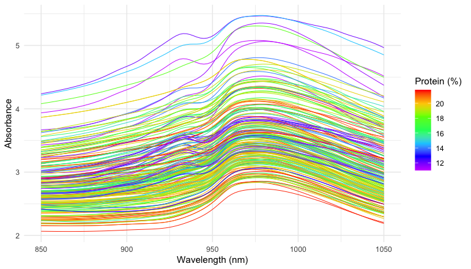
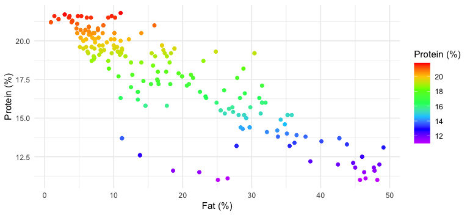
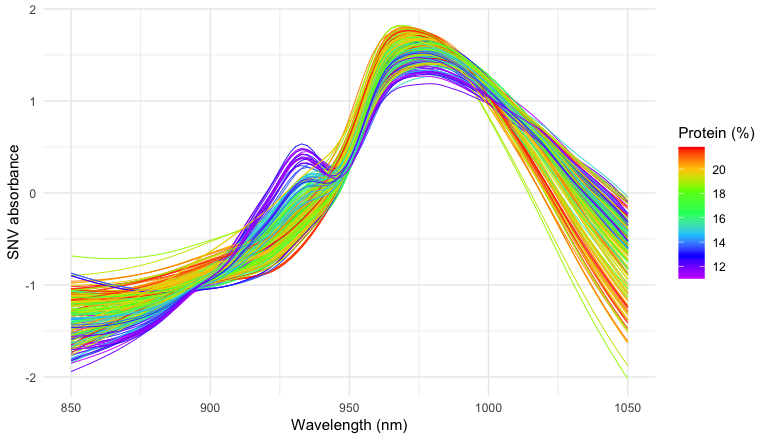
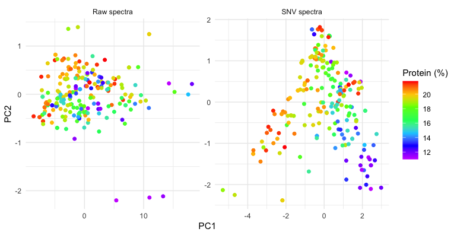
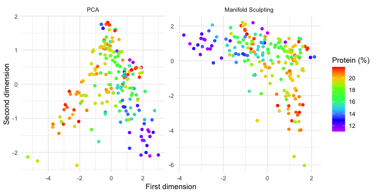
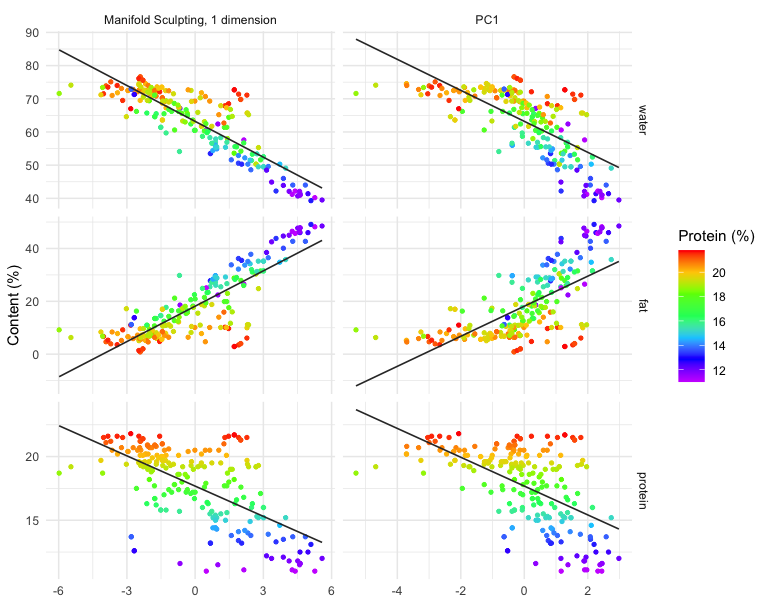
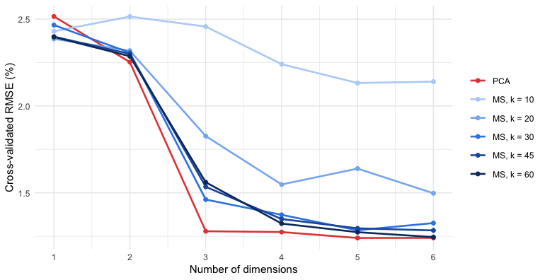
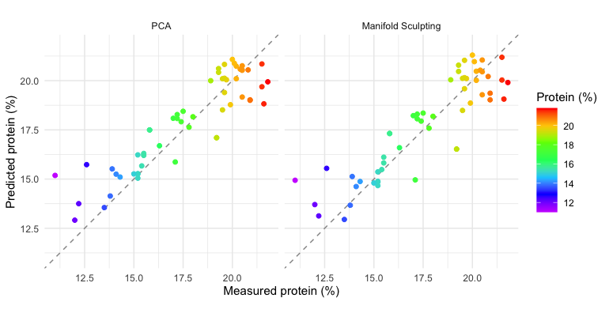

The principal component scores of near-infrared (NIR) spectra often lie on a curve rather than in a cloud: the spectra respond nonlinearly to the composition of the samples, and principal component analysis (PCA), which is linear, bends the main gradient of the data into an arch. This vignette looks at such an arch in the NIR spectra of meat, unfolds it with Manifold Sculpting, and asks whether the unfolded coordinates predict the protein content of the samples better than the principal components, with the tidyverse and tidymodels packages.
The results were computed once, with the code shown here, because tuning the models takes several minutes (see Reproducibility).
library(manifoldsculpting) # also attaches recipes
library(dplyr)
library(tidyr)
library(ggplot2)
library(rsample)
library(parsnip)
library(workflows)
library(tune)
library(yardstick)
theme_set(theme_minimal(base_size = 10))
rainbow_protein <- scale_colour_gradientn(
colours = rev(rainbow(7, end = 0.8)),
name = "Protein (%)"
)The data
The meats data of the modeldata package are the Tecator
data set (Borggaard and Thodberg, 1992): 215 samples of finely chopped
meat, with their absorbance spectra measured by transmission at 100
wavelengths from 850 to 1050 nm, and their water, fat and protein
contents (%).
data(meats, package = "modeldata")
meats
#> # A tibble: 215 × 103
#> x_001 x_002 x_003 x_004 x_005 x_006 x_007 x_008 x_009 x_010 x_011 x_012 x_013
#> <dbl> <dbl> <dbl> <dbl> <dbl> <dbl> <dbl> <dbl> <dbl> <dbl> <dbl> <dbl> <dbl>
#> 1 2.62 2.62 2.62 2.62 2.62 2.62 2.62 2.62 2.63 2.63 2.63 2.63 2.64
#> 2 2.83 2.84 2.84 2.85 2.85 2.86 2.86 2.87 2.87 2.88 2.88 2.89 2.90
#> 3 2.58 2.58 2.59 2.59 2.59 2.59 2.59 2.60 2.60 2.60 2.60 2.61 2.61
#> 4 2.82 2.82 2.83 2.83 2.83 2.83 2.83 2.84 2.84 2.84 2.84 2.85 2.85
#> 5 2.79 2.79 2.79 2.79 2.80 2.80 2.80 2.80 2.81 2.81 2.81 2.82 2.82
#> 6 3.01 3.02 3.02 3.03 3.03 3.04 3.04 3.05 3.06 3.06 3.07 3.08 3.09
#> 7 2.99 2.99 3.00 3.01 3.01 3.02 3.02 3.03 3.04 3.04 3.05 3.06 3.07
#> 8 2.53 2.53 2.53 2.53 2.53 2.53 2.53 2.53 2.54 2.54 2.54 2.54 2.54
#> 9 3.27 3.28 3.29 3.29 3.30 3.31 3.31 3.32 3.33 3.33 3.34 3.35 3.36
#> 10 3.40 3.41 3.41 3.42 3.43 3.43 3.44 3.45 3.46 3.47 3.48 3.48 3.49
#> # ℹ 205 more rows
#> # ℹ 90 more variables: x_014 <dbl>, x_015 <dbl>, x_016 <dbl>, x_017 <dbl>,
#> # x_018 <dbl>, x_019 <dbl>, x_020 <dbl>, x_021 <dbl>, x_022 <dbl>,
#> # x_023 <dbl>, x_024 <dbl>, x_025 <dbl>, x_026 <dbl>, x_027 <dbl>,
#> # x_028 <dbl>, x_029 <dbl>, x_030 <dbl>, x_031 <dbl>, x_032 <dbl>,
#> # x_033 <dbl>, x_034 <dbl>, x_035 <dbl>, x_036 <dbl>, x_037 <dbl>,
#> # x_038 <dbl>, x_039 <dbl>, x_040 <dbl>, x_041 <dbl>, x_042 <dbl>, …In long format, with one row per sample and wavelength, the spectra are easy to transform and to plot:
wavelengths <- seq(850, 1050, length.out = 100)
spectra <- meats |>
mutate(sample = row_number()) |>
pivot_longer(starts_with("x_"), names_to = "channel", values_to = "absorbance") |>
mutate(wavelength = wavelengths[as.integer(sub("x_", "", channel))])
spectra
#> # A tibble: 21,500 × 7
#> water fat protein sample channel absorbance wavelength
#> <dbl> <dbl> <dbl> <int> <chr> <dbl> <dbl>
#> 1 60.5 22.5 16.7 1 x_001 2.62 850
#> 2 60.5 22.5 16.7 1 x_002 2.62 852.
#> 3 60.5 22.5 16.7 1 x_003 2.62 854.
#> 4 60.5 22.5 16.7 1 x_004 2.62 856.
#> 5 60.5 22.5 16.7 1 x_005 2.62 858.
#> 6 60.5 22.5 16.7 1 x_006 2.62 860.
#> 7 60.5 22.5 16.7 1 x_007 2.62 862.
#> 8 60.5 22.5 16.7 1 x_008 2.62 864.
#> 9 60.5 22.5 16.7 1 x_009 2.63 866.
#> 10 60.5 22.5 16.7 1 x_010 2.63 868.
#> # ℹ 21,490 more rows
ggplot(spectra, aes(wavelength, absorbance, group = sample, colour = protein)) +
geom_line(linewidth = 0.3) +
rainbow_protein +
labs(x = "Wavelength (nm)", y = "Absorbance")
The spectra differ mostly by vertical offsets, caused by light scattering in samples of different texture, which have little to do with their composition. The composition itself has only two degrees of freedom, since water, fat and protein add up to about 99%: protein decreases as fat increases (correlation -0.86), but among lean samples it varies on its own.
ggplot(meats, aes(fat, protein, colour = protein)) +
geom_point(size = 1.5) +
rainbow_protein +
labs(x = "Fat (%)", y = "Protein (%)")
Scatter correction
The standard normal variate (SNV) transformation (Barnes et al., 1989) removes most of the scatter: each spectrum is centered and scaled by its own mean and standard deviation.
spectra <- spectra |>
group_by(sample) |>
mutate(snv = (absorbance - mean(absorbance)) / sd(absorbance)) |>
ungroup()
meats_snv <- spectra |>
select(sample, water, fat, protein, channel, snv) |>
pivot_wider(names_from = channel, values_from = snv) |>
select(-sample)
ggplot(spectra, aes(wavelength, snv, group = sample, colour = protein)) +
geom_line(linewidth = 0.3) +
rainbow_protein +
labs(x = "Wavelength (nm)", y = "SNV absorbance")
Principal component analysis
The models share a recipe: protein is the outcome, water and fat are kept for the plots but are not predictors, and the spectra are centered.
base_recipe <- function(data) {
recipe(protein ~ ., data = data) |>
update_role(water, fat, new_role = "composition") |>
step_center(all_predictors())
}
pca_raw <- base_recipe(meats) |>
step_pca(all_predictors(), num_comp = 2) |>
prep()
pca_snv <- base_recipe(meats_snv) |>
step_pca(all_predictors(), num_comp = 2) |>
prep()
# Percentage of variance of the first three components
variance <- bind_rows(
raw = tidy(pca_raw, number = 2, type = "variance"),
SNV = tidy(pca_snv, number = 2, type = "variance"),
.id = "spectra"
) |>
filter(terms == "percent variance", component <= 3) |>
pivot_wider(names_from = component, names_prefix = "PC", values_from = value) |>
select(spectra, PC1, PC2, PC3)
variance
#> # A tibble: 2 × 4
#> spectra PC1 PC2 PC3
#> <chr> <dbl> <dbl> <dbl>
#> 1 raw 98.7 0.901 0.296
#> 2 SNV 68.1 29.1 1.63
pca_scores <- bind_rows(
"Raw spectra" = bake(pca_raw, new_data = NULL),
"SNV spectra" = bake(pca_snv, new_data = NULL),
.id = "spectra"
)
ggplot(pca_scores, aes(PC1, PC2, colour = protein)) +
geom_point(size = 1.5) +
facet_wrap(~spectra, scales = "free") +
rainbow_protein
On the raw spectra, the first component is the scatter, with 98.7% of the variance, and the protein contents are mixed up. After the SNV transformation, the first two components carry 68% and 29% of the variance, and the scores lie on an arch: the samples richest in protein are along the left arm and at the top, and the poorest at the end of the right arm. This is the horseshoe effect of ordination methods (Diaconis et al., 2008): when the data follow one dominant nonlinear gradient, PCA represents it by a curve that spreads over two components. Here, the gradient is mostly that of fat and water, which change the spectra the most, and protein follows it because it decreases as fat increases.
Manifold Sculpting
step_manifold_sculpting() replaces
step_pca() in the same recipe. It looks for coordinates
that preserve the distances and angles between neighboring spectra (20
neighbors here), with the best of three runs:
ms_snv <- base_recipe(meats_snv) |>
step_manifold_sculpting(all_predictors(), num_comp = 2, neighbors = 20,
options = list(nstart = 3), seed = 1) |>
prep()
ms_scores <- bake(ms_snv, new_data = NULL)
ms_scores |> select(MS1, MS2, water, fat, protein)
#> # A tibble: 215 × 5
#> MS1 MS2 water fat protein
#> <dbl> <dbl> <dbl> <dbl> <dbl>
#> 1 0.364 0.904 60.5 22.5 16.7
#> 2 -2.40 1.15 46 40.1 13.5
#> 3 0.959 -3.04 71 8.4 20.5
#> 4 1.44 -2.07 72.8 5.9 20.7
#> 5 -0.317 1.48 58.3 25.5 15.5
#> 6 -2.66 1.72 44 42.7 13.7
#> 7 -2.96 0.813 44 42.7 13.7
#> 8 1.02 0.650 69.3 10.6 19.3
#> 9 -0.705 1.13 61.4 19.9 17.7
#> 10 -0.764 0.490 61.4 19.9 17.7
#> # ℹ 205 more rows
bind_rows(
"PCA" = bake(pca_snv, new_data = NULL) |> rename(dim_1 = PC1, dim_2 = PC2),
"Manifold Sculpting" = ms_scores |> rename(dim_1 = MS1, dim_2 = MS2),
.id = "method"
) |>
mutate(method = factor(method, levels = c("PCA", "Manifold Sculpting"))) |>
ggplot(aes(dim_1, dim_2, colour = protein)) +
geom_point(size = 1.5) +
facet_wrap(~method, scales = "free") +
rainbow_protein +
labs(x = "First dimension", y = "Second dimension")
Manifold Sculpting unfolds the arch. The main gradient now runs along the first dimension, from the fattest samples, poorest in protein, on one side to the leanest on the other. The samples of the left arm of the arch, lean and rich in protein, form a separate branch along the second dimension:
# Where the samples of the left arm of the PCA arch are in the embedding
ms_scores |>
mutate(PC1 = bake(pca_snv, new_data = NULL)$PC1) |>
mutate(arch = if_else(PC1 < -1.5, "left arm", "rest of the arch")) |>
group_by(arch) |>
summarise(samples = n(), across(c(MS1, MS2, water, fat, protein), mean))
#> # A tibble: 2 × 7
#> arch samples MS1 MS2 water fat protein
#> <chr> <int> <dbl> <dbl> <dbl> <dbl> <dbl>
#> 1 left arm 34 1.04 -2.89 71.4 8.1 20.2
#> 2 rest of the arch 181 -0.196 0.543 61.7 20.0 17.2The two branches are the two degrees of freedom of the composition: the gradient of fat against water and protein, and, among lean samples, the variation of protein on its own. PCA folds them into one arch; Manifold Sculpting lays them side by side.
The first dimension alone shows the difference with PCA. With a single dimension, Manifold Sculpting orders the spectra along the arch, while the first principal component is a projection across it:
first_dimension <- bind_rows(
"PC1" = base_recipe(meats_snv) |>
step_pca(all_predictors(), num_comp = 1) |>
prep() |>
bake(new_data = NULL) |>
rename(dimension = PC1),
"Manifold Sculpting, 1 dimension" = base_recipe(meats_snv) |>
step_manifold_sculpting(all_predictors(), num_comp = 1, neighbors = 20,
options = list(nstart = 3), seed = 1) |>
prep() |>
bake(new_data = NULL) |>
rename(dimension = MS1),
.id = "method"
) |>
mutate(protein_level = protein) |>
pivot_longer(c(water, fat, protein), names_to = "constituent", values_to = "percent") |>
mutate(constituent = factor(constituent, levels = c("water", "fat", "protein")))
# Share of the variance of each constituent explained by a straight line
linearity <- first_dimension |>
group_by(constituent, method) |>
summarise(r_squared = cor(dimension, percent)^2, .groups = "drop") |>
pivot_wider(names_from = method, values_from = r_squared)
linearity
#> # A tibble: 3 × 3
#> constituent `Manifold Sculpting, 1 dimension` PC1
#> <fct> <dbl> <dbl>
#> 1 water 0.734 0.505
#> 2 fat 0.682 0.453
#> 3 protein 0.383 0.320
ggplot(first_dimension, aes(dimension, percent, colour = protein_level)) +
geom_point(size = 1) +
geom_smooth(method = "lm", formula = y ~ x, se = FALSE, colour = "grey20", linewidth = 0.5) +
facet_grid(constituent ~ method, scales = "free") +
rainbow_protein +
labs(x = NULL, y = "Content (%)")
A straight line on the one-dimensional embedding explains 73% of the variance of water and 68% of fat, against 51% and 45% for the first principal component, whose relation with the contents bends at the ends of the arch. Protein gains less (38% against 32%): as the composition plot showed, it is not a function of the fat and water gradient alone.
Predicting protein
Does unfolding the arch help to predict protein? Principal component regression and its Manifold Sculpting analog are compared, a linear regression on 1 to 6 dimensions. The samples are split into a training set (75%) and a test set, and the number of dimensions (and, for Manifold Sculpting, the number of neighbors) is chosen by 10-fold cross-validation on the training set.
set.seed(2026)
meats_split <- initial_split(meats_snv, prop = 0.75, strata = protein)
meats_train <- training(meats_split)
folds <- vfold_cv(meats_train, v = 10, strata = protein)
pca_wflow <- workflow(
base_recipe(meats_train) |>
step_pca(all_predictors(), num_comp = tune()),
linear_reg()
)
ms_wflow <- workflow(
base_recipe(meats_train) |>
step_manifold_sculpting(all_predictors(), num_comp = tune(), neighbors = tune(),
options = list(nstart = 3), seed = 1),
linear_reg()
)
pca_tuned <- tune_grid(
pca_wflow,
resamples = folds,
grid = tibble(num_comp = 1:6),
metrics = metric_set(rmse, rsq)
)
ms_tuned <- tune_grid(
ms_wflow,
resamples = folds,
grid = crossing(num_comp = 1:6, neighbors = c(10, 20, 30, 45, 60)),
metrics = metric_set(rmse, rsq)
)
cv_results <- bind_rows(
collect_metrics(pca_tuned) |> mutate(model = "PCA"),
collect_metrics(ms_tuned) |> mutate(model = paste0("MS, k = ", neighbors))
) |>
filter(.metric == "rmse")
model_levels <- c("PCA", paste0("MS, k = ", c(10, 20, 30, 45, 60)))
ggplot(cv_results, aes(num_comp, mean, colour = factor(model, levels = model_levels))) +
geom_line(linewidth = 0.8) +
geom_point(size = 1.5) +
scale_colour_manual(values = c("#e34948", "#b7d3f6", "#86b6ef", "#3987e5", "#1c5cab", "#0d366b")) +
scale_x_continuous(breaks = 1:6) +
labs(x = "Number of dimensions", y = "Cross-validated RMSE (%)", colour = NULL)
best_pca <- show_best(pca_tuned, metric = "rmse", n = 3)
best_ms <- show_best(ms_tuned, metric = "rmse", n = 3)
pca_rmse <- collect_metrics(pca_tuned) |> filter(.metric == "rmse")
best_pca
#> # A tibble: 3 × 7
#> num_comp .metric .estimator mean n std_err .config
#> <int> <chr> <chr> <dbl> <int> <dbl> <chr>
#> 1 5 rmse standard 1.24 10 0.119 pre5_mod0_post0
#> 2 6 rmse standard 1.24 10 0.116 pre6_mod0_post0
#> 3 4 rmse standard 1.27 10 0.131 pre4_mod0_post0
best_ms
#> # A tibble: 3 × 8
#> num_comp neighbors .metric .estimator mean n std_err .config
#> <int> <dbl> <chr> <chr> <dbl> <int> <dbl> <chr>
#> 1 6 60 rmse standard 1.25 10 0.126 pre30_mod0_post0
#> 2 5 60 rmse standard 1.27 10 0.101 pre25_mod0_post0
#> 3 6 45 rmse standard 1.28 10 0.104 pre29_mod0_post0The best settings of each model are refitted on the whole training set and evaluated on the test set:
pca_final <- pca_wflow |>
finalize_workflow(select_best(pca_tuned, metric = "rmse")) |>
last_fit(meats_split, metrics = metric_set(rmse, rsq))
ms_final <- ms_wflow |>
finalize_workflow(select_best(ms_tuned, metric = "rmse")) |>
last_fit(meats_split, metrics = metric_set(rmse, rsq))
test_metrics <- bind_rows(
"PCA" = collect_metrics(pca_final),
"Manifold Sculpting" = collect_metrics(ms_final),
.id = "model"
) |>
select(model, .metric, .estimate) |>
pivot_wider(names_from = .metric, values_from = .estimate)
test_metrics
#> # A tibble: 2 × 3
#> model rmse rsq
#> <chr> <dbl> <dbl>
#> 1 PCA 1.30 0.810
#> 2 Manifold Sculpting 1.30 0.796
bind_rows(
"PCA" = collect_predictions(pca_final),
"Manifold Sculpting" = collect_predictions(ms_final),
.id = "model"
) |>
mutate(model = factor(model, levels = c("PCA", "Manifold Sculpting"))) |>
ggplot(aes(protein, .pred, colour = protein)) +
geom_abline(colour = "grey60", linetype = "dashed") +
geom_point(size = 1.5) +
facet_wrap(~model) +
coord_obs_pred() +
rainbow_protein +
labs(x = "Measured protein (%)", y = "Predicted protein (%)")
With few neighbors, the regression on the Manifold Sculpting embedding is clearly worse than principal component regression. It improves with the number of neighbors and, with 60 neighbors and 6 dimensions, matches principal component regression with 5 components (cross-validated RMSE of 1.25 and 1.24). On the test set, the two models are equally accurate (RMSE of 1.30 and 1.30).
What we see
- The arch is real. Once the scatter is removed, the PCA scores of the spectra lie on an arch: one nonlinear structure spread over two components, the horseshoe effect.
- Manifold Sculpting unfolds it. Its embedding separates the two degrees of freedom of the composition, the fat and water gradient and the protein content of lean samples, which the arch folds together. With one dimension, it gives a coordinate along the fat and water gradient that is much closer to linear than the first principal component.
- Unfolding does not improve the prediction of protein. Protein absorbs weakly between 850 and 1050 nm, where the bands of water and fat dominate, and much of its signal is in components of small variance: the third principal component, with 1.6% of the variance, reduces the cross-validated RMSE of principal component regression from 2.25 to 1.28. Manifold Sculpting, which preserves the geometry of neighborhoods, keeps such small variations only with large neighborhoods, where it behaves more like a global method, and the two regressions are then equally accurate.
Manifold Sculpting is thus a tool to see the structure of the spectra, and to obtain coordinates that follow the main gradient of composition. For the calibration of a minor constituent such as protein, a linear model on enough components, such as principal component regression or partial least squares, remains as accurate and simpler.
Reproducibility
The vignette was computed with the following versions:
| Package | Version |
|---|---|
| manifoldsculpting | 1.2.1 |
| modeldata | 1.6.0 |
| recipes | 1.4.0 |
| rsample | 1.3.2 |
| parsnip | 1.6.1 |
| workflows | 1.3.0 |
| tune | 2.1.0 |
| yardstick | 1.4.0 |
| dplyr | 1.2.1 |
| tidyr | 1.3.2 |
| ggplot2 | 4.0.3 |
To compute it again, install these packages and run
vignettes/precompute.R from the source of the package. It
knits vignettes/spectroscopy.Rmd.orig, which holds the
code, into vignettes/spectroscopy.Rmd.
References
Barnes, R. J., Dhanoa, M. S. and Lister, S. J. (1989). Standard normal variate transformation and de-trending of near-infrared diffuse reflectance spectra. Applied Spectroscopy, 43, 772–777.
Borggaard, C. and Thodberg, H. H. (1992). Optimal minimal neural interpretation of spectra. Analytical Chemistry, 64, 545–551.
Diaconis, P., Goel, S. and Holmes, S. (2008). Horseshoes in multidimensional scaling and local kernel methods. The Annals of Applied Statistics, 2, 777–807.
Gashler, M., Ventura, D. and Martinez, T. (2008). Iterative non-linear dimensionality reduction with manifold sculpting. In Advances in Neural Information Processing Systems 20, 513–520.